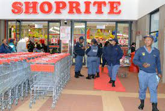
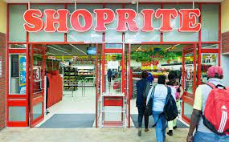
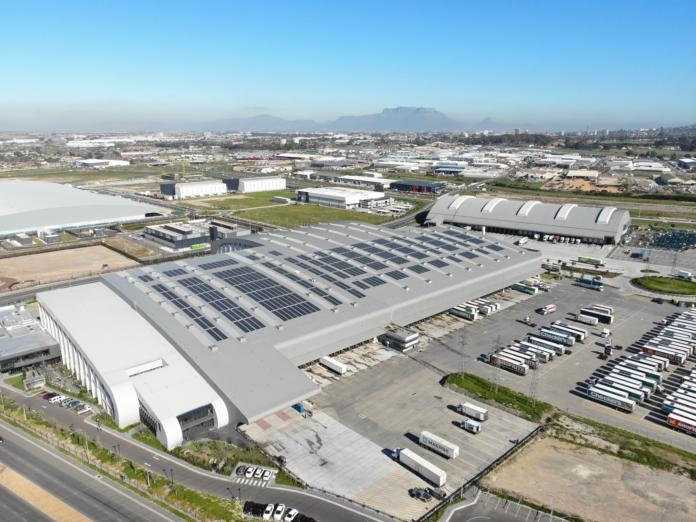

SHOPRITE
The Shoprite Group of companies was established in 1979. In 1990 Shoprite opened in Namibia. In 1998, it acquired the national Checkers chain. In 1995 the first store in Lusaka, Zambia, was opened. That same year they acquired a centralised distribution company Sentra, which had been acting as a central buyer for 550 owner-managed supermarkets, thereby allowing Shoprite to expand into franchising.On 24 December 1996 a bomb exploded in a Worcester Shoprite and killed 3 people and injured over 50. It was a racially motivated act that shocked the company
The Shoprite Group of Companies (JSE: SHP), is Africa's largest food retailer.It operates more than 2,892 stores in 14 countries across Africa. The company's headquarters are in Brackenfell in the Western Cape province of South Africa. Shoprite Holdings Limited is a public company listed on the Johannesburg Stock Exchange, with secondary listings on both the Namibian and Zambian Stock Exchanges. As of 2021, the Shoprite Group employed more than 140,000 people in more than 2,892 stores across the African continent.
THE Shoprite Group now generates enough electricity to power over 1 100 households – 12 300 MWh of electricity – a year from solar energy, following the installation of rooftop PV (photovoltaic) panels at 19 sites in South Africa and Namibia. The Group has also fitted 649 solar panels to the roofs of its refrigerated trucks, which generate 760 MWh annually – enough power to run 1 040 refrigerators for a full year. These allow drivers to switch off truck ignitions at delivery locations, reducing noise and exhaust pollution, while keeping the cold chain intact.
